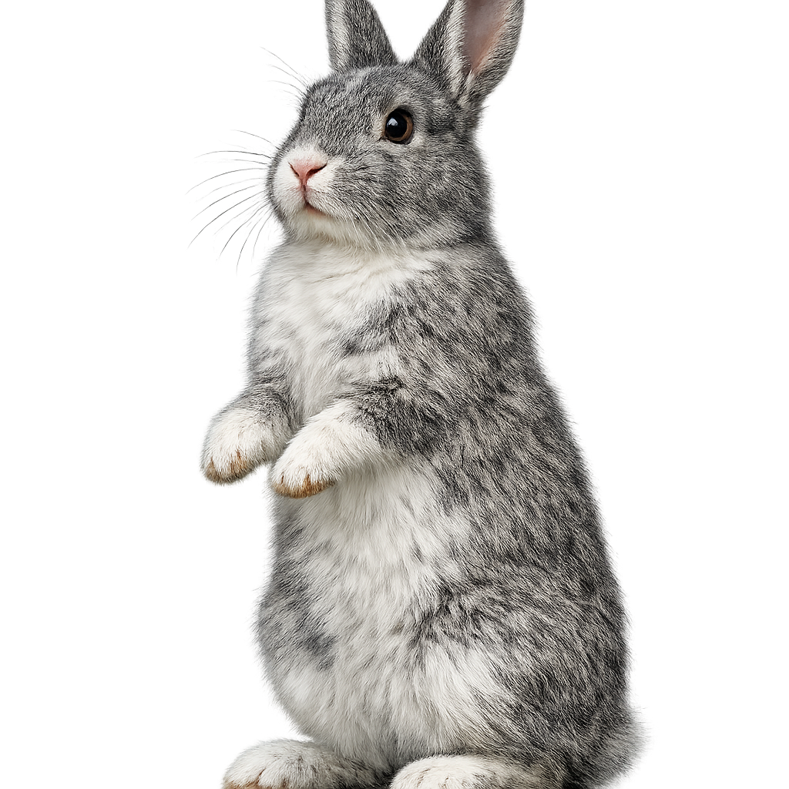
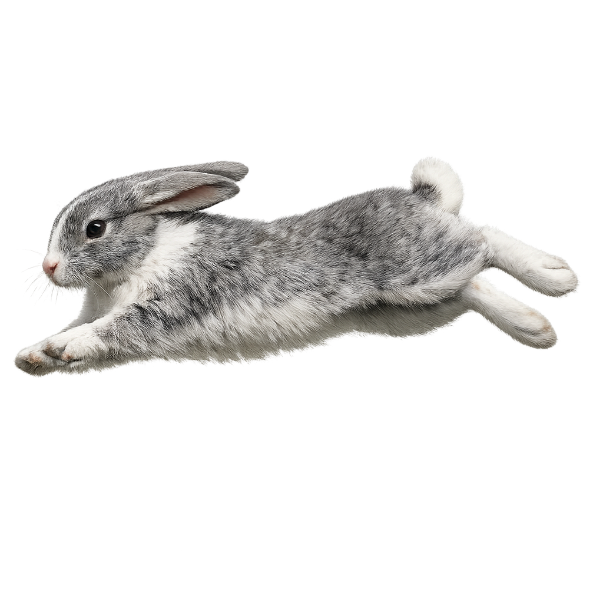

The
Untold Story
传说与 起源
“凡是提到‘嘎布拉’，老人的眉毛就会皱一皱，像是想起什么既好笑又棘手的事。”


“这兔子，不是一般的兔子。” 一位老人回忆道。别的兔子安安静静啃草，嘎布拉却总是 扑腾、 拱土。 甚至把木栏杆啃得劈里啪啦直响。夜里翻水盆，光修笼子就修了五六次。
野性外观
毛发粗硬如风中乱草，梳不服帖。体型灵活，四肢强劲，随时准备冲破束缚。
挑衅眼神
明亮里带着几分挑衅，眼神中透露着不肯安分。凡手边之物，皆可变为它的玩具。
Archive
“这不是严格意义上的新品种，可在行为和外貌上确实形成了一群体，毛发粗糙，性子急躁，和安哥拉、垂耳那类观赏兔完全不同。它更像是家兔里被遗忘的 野性分支 。”
记录来源：年轻兽医 · 田野笔记
“
学者在古墓壁画发现相似兔形，旁刻 Gabra，译为 “不可驯服者”。